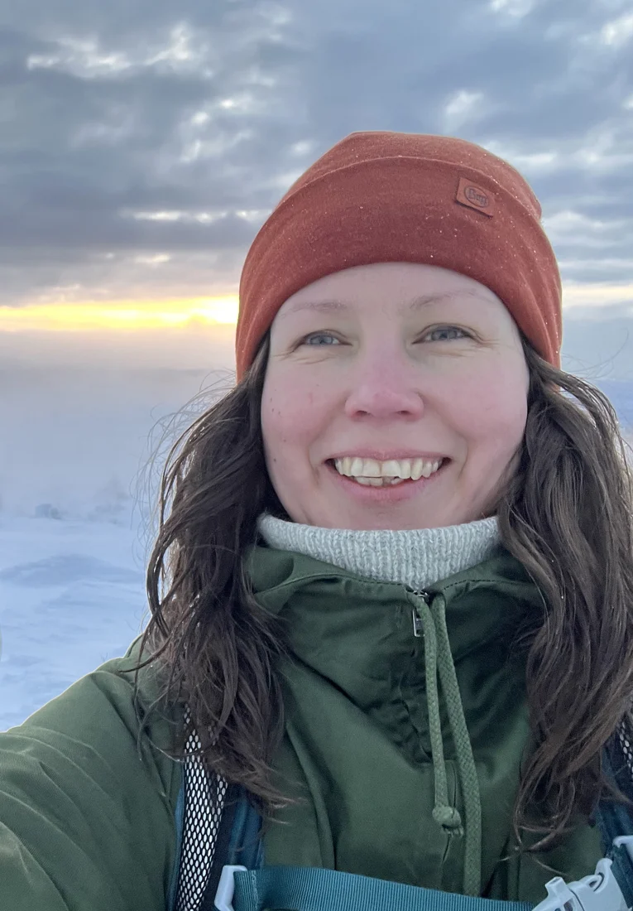

UiT
Richard Fraser
Project leadership · King crabs
Richard leads SPECIES and contributes to the king crab case, connecting Arctic fisheries, local livelihoods and global markets.
Project leadership · King crabs
Richard leads SPECIES and contributes to the king crab case, connecting Arctic fisheries, local livelihoods and global markets.
Anthropology · Muskoxen
Astrid contributes anthropological research and collaboration with hunters and wildlife managers to the muskox case in West Greenland.
ORCID profile ↗
Senior Researcher · Animal ecology
Floris studies movement ecology, population biology, climate change and ecological modelling. He combines empirical data, statistical analysis and agent-based models to understand how environmental variation and human pressures affect animal movement, fitness and population dynamics.
ORCID profile ↗
Postdoctoral researcher · Ecological modelling
Benjamin works in movement ecology and population biology. Combining empirical data, bio-logging and agent-based modelling, he investigates how animals’ physiological and behavioural responses to environmental variation and human activities affect population dynamics.
ORCID profile ↗Anthropology · Baltic seals
Florian contributes to the Finland fieldwork team, learning with coastal communities about fishing, seal hunting, marine relationships and material practices.

Doctoral research · Seal-related material practices
Heidi’s doctoral research focuses on practices involving seal skins and fat. She contributes to documenting the knowledge, skills and cultural relationships involved in the Bothnian Bay sealing tradition.

Professor of Livestock Genomics
Juha works on animal genetic resources, molecular and population genetics, animal genomics and the valuation of genetic resources. His multidisciplinary research includes livestock genetic resources across northern Eurasia.

Senior Scientist · Genomics and bioinformatics
Kisun studies genome assembly, functional genomics and population genomics in livestock, reindeer and fish. He uses sequencing and computational approaches to investigate genetic diversity and adaptation in northern breeds and species.

Doctoral Researcher
Rodney integrates whole-genome sequencing, genome assembly and population genomics to investigate genetic diversity and adaptation in indigenous African cattle, building on experience in molecular diagnostics and livestock disease epidemiology.

Research Scientist · Genomics and bioinformatics
Melak combines genomics, transcriptomics and bioinformatics to study adaptation and biological diversity in domesticated and wild animals. His interests include multi-omics integration, functional genomics and environmental adaptation.

Senior Scientist · Artificial intelligence methods
Jonne coordinates artificial intelligence method services at Luke. His experience includes computer vision, sensor fusion, remotely sensed data and automated systems for environmental observation.
Anthropology · Finland cases
Nuccio contributes anthropological research on Lapland cattle and is part of the Rovaniemi team conducting multispecies fieldwork in Finland.
Fieldwork contributor
Aytalina is part of the Rovaniemi team conducting multispecies fieldwork in Finland, including the spring and summer 2026 work with coastal communities.
Reindeer case contributor
Vegard contributes to research on reindeer herding, technology and Sámi knowledge.
Reindeer case contributor
Piers contributes to the reindeer case, exploring the relationships between herding, technology and Sámi knowledge.
King crab case contributor
Jannike contributes to research on king crabs, marine ecosystems and sustainable fisheries.
Polar bear case contributor
Janne contributes to research on changing human–polar bear relationships in East Greenland.
Muskox case contributor
Niels Martin Schmidt is a contributor to the project’s research on muskoxen and changing ecological relationships in Greenland.
Wild duck case contributor
Tommy contributes to the wild duck case, which brings research into dialogue with Sámi artistic practice.
Artist · Wild ducks
Niillas contributes Sámi artistic perspectives to the wild duck case.
Artist · Wild ducks
Elina contributes Sámi artistic perspectives to the wild duck case.